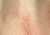

skin

Definition: Skin is the layer of usually soft, flexible outer tissue covering the body of a vertebrate animal, with three main functions: protection, regulation, and sensation.Other animal coverings, such as the arthropod exoskeleton, have different developmental origin, structure and chemical composition. The adjective cutaneous means "of the skin" (from Latin cutis 'skin'). In mammals, the skin is an organ of the integumentary system made up of multiple layers of ectodermal tissue and guards the underlying muscles, bones, ligaments, and internal organs. Skin of a different nature exists in amphibians, reptiles, and birds. Skin (including cutaneous and subcutaneous tissues) plays crucial roles in formation, structure, and function of extraskeletal apparatus such as horns of bovids (e.g., cattle) and rhinos, cervids' antlers, giraffids' ossicones, armadillos' osteoderm, and os penis/os clitoris.All mammals have some hair on their skin, even marine mammals like whales, dolphins, and porpoises that appear to be hairless.
Source: Wikipedia
Wikipedia Page
Wikidata Page
Occurs in: